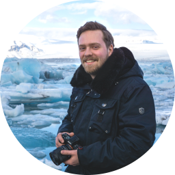
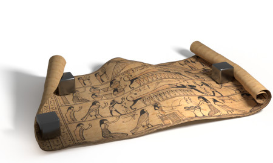
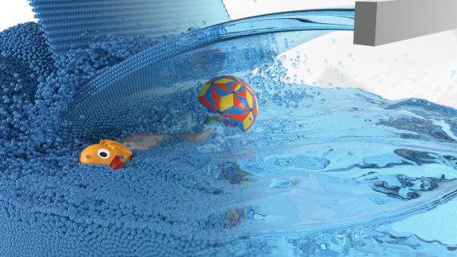
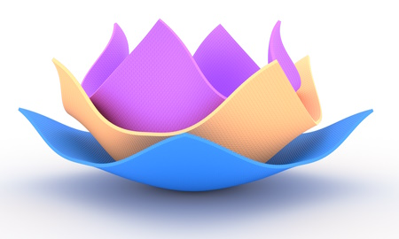
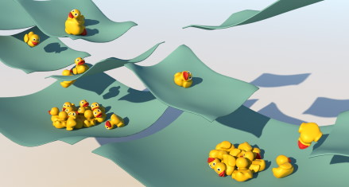

Fabian Löschner

Welcome to my profile
I'm a PhD student in the Computer Animation group at RWTH Aachen University in Germany.
My research interests include simulation of large deformations using (higher-order) FEM and higher-order time integration in physically-based animation.
In my research I explore the behavior of non-classical material models and how to make them more approachable for application in computer graphics.
In my spare time I love traveling and taking photos or working on personal coding projects (mostly in Rust now) as well as playing video games.
Publications
This is a list of the publications I worked on as first-author. Check out my staff entry on our research group's website for a list of all publications I was involved in and co-authored.
 Curved Three-Director Cosserat Shells with Strong CouplingSCA 2024 - Project page - Paper Fabian Löschner, José Antonio Fernández-Fernández, Stefan Rhys Jeske, Jan Bender
DOI: 10.1111/cgf.15183 Weighted Laplacian Smoothing for Surface Reconstruction of Particle-based FluidsVMV 2023 - Project page - Paper Fabian Löschner, Timna Böttcher, Stefan Rhys Jeske, Jan Bender
DOI: 10.2312/vmv.20231245 Micropolar Elasticity in Physically-Based AnimationSCA 2023 - Project page - Paper Fabian Löschner, José Antonio Fernández-Fernández, Stefan Rhys Jeske, Andreas Longva, Jan Bender
DOI: 10.1145/3606922 Fabian Löschner, Andreas Longva, Stefan Rhys Jeske, Tassilo Kugelstadt, Jan Bender
DOI: 10.1111/cgf.14110
Programming
On GitHub, I made smaller contributions to several open source projects. As @w1th0utnam3, I'm also maintainer of the following notable project(s):
- splashsurf - a command line tool and library for surface reconstruction of SPH particle data, written in Rust.
Photography

During vacations I like to travel and try to improve my photography skills. Have a look through my 500px portfolio.
Contact
If you want to contact me you can write to my university mail address: loeschner@cs.rwth-aachen.de or send me a private message at twitter.